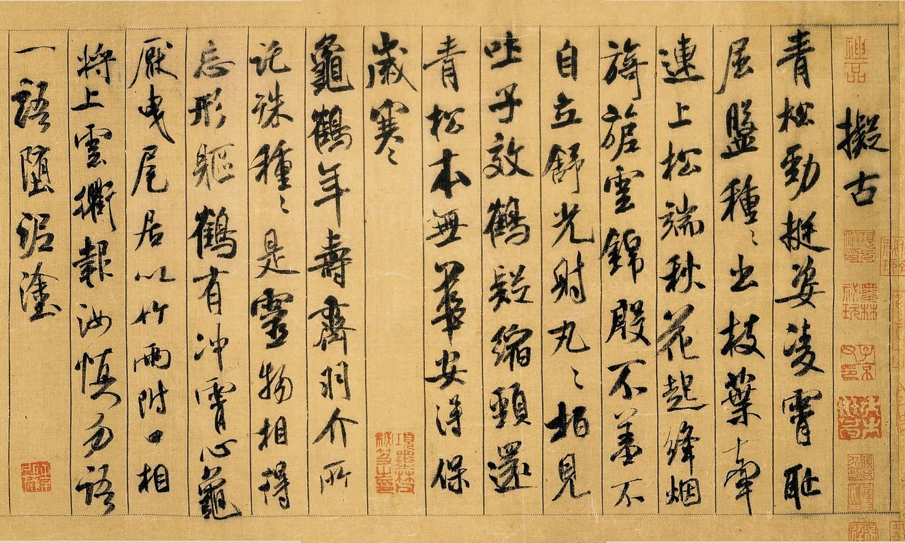
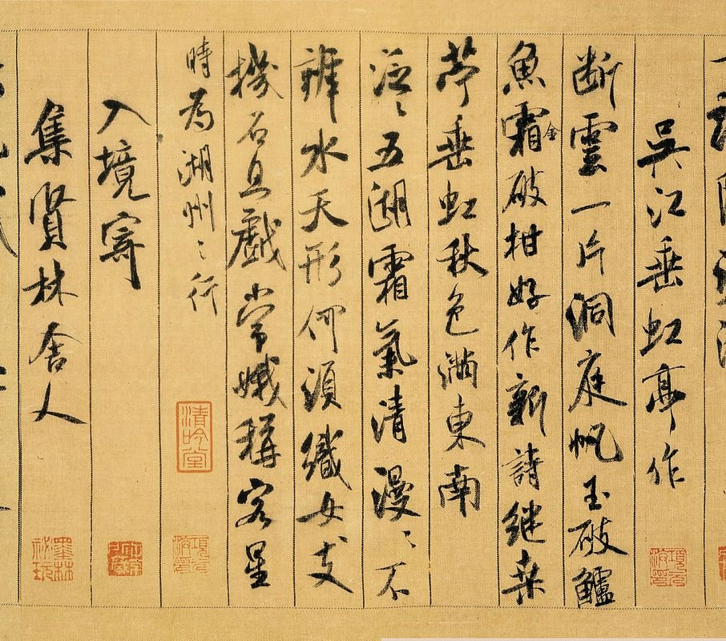
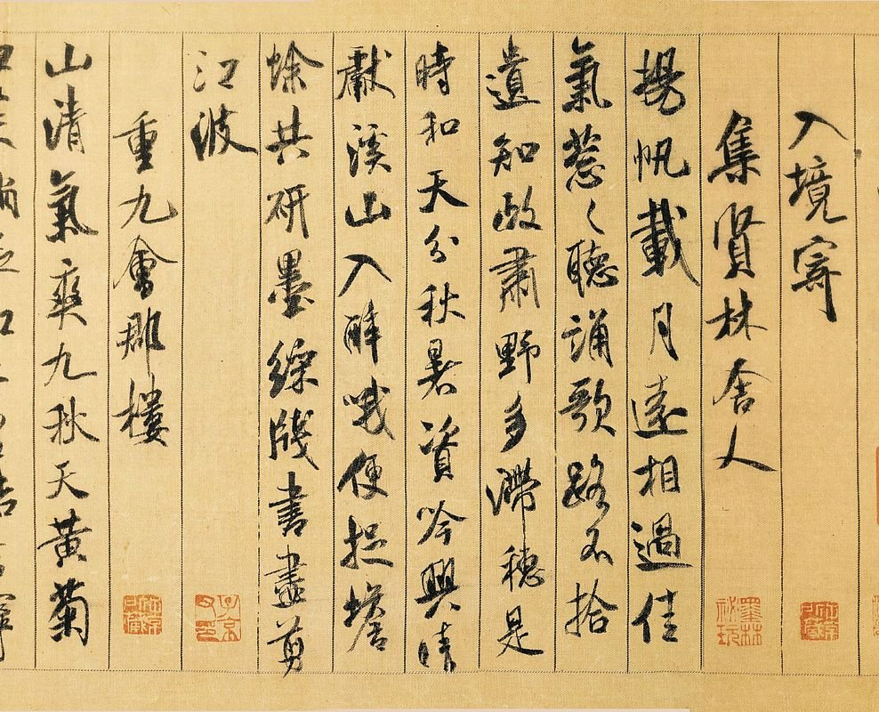
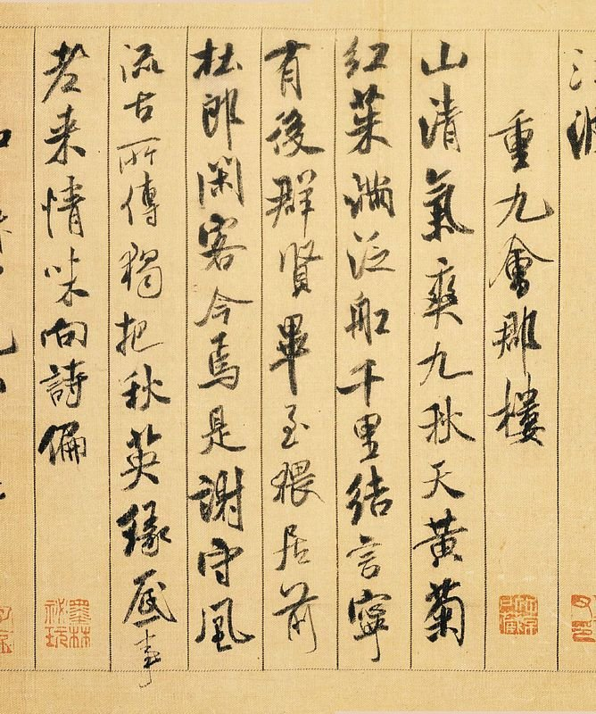
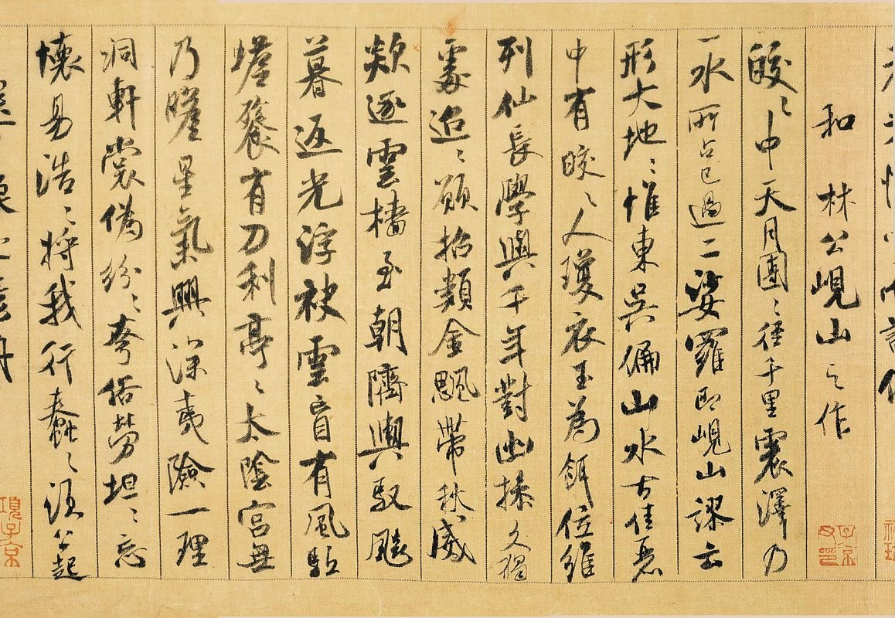
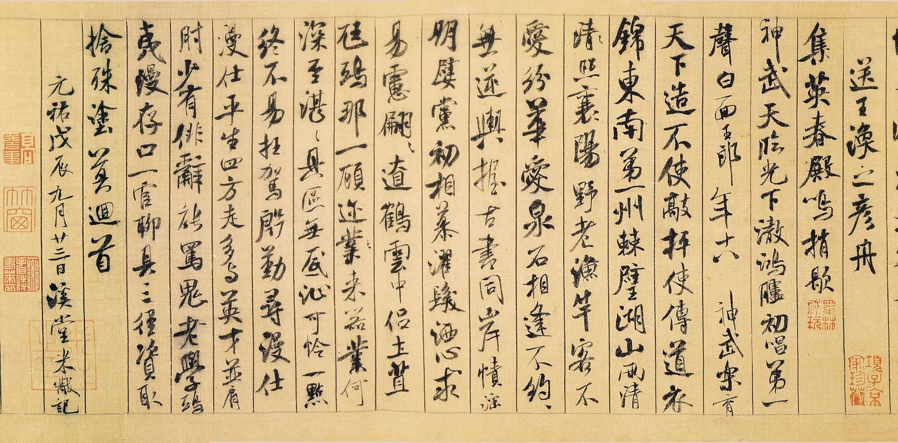

米芾赫赫巨作「蜀素帖」，在故宮的展出即將結束（展期至12月1日止）
擬古

吳江垂虹亭作

入境寄集賢林舍人

重九會郡樓

和林公峴山之作

送王渙之彥舟

閑雅書法論壇中的連結，解析度更高：
http://www.shianya.com/phpBB2/viewtopic.php?f=11&t=9585
故宮的「米芾的書畫世界」網站上有非常好的介面，提供高解析度的放大圖檔：
http://tech2.npm.gov.tw/mifu/tw/viewarticle/viewarticle.aspx?article_id=05
故宮網站：米芾的書畫世界
絕對是書法同好不可不逛的站！
http://tech2.npm.gov.tw/mifu/
http://tw.myblog.yahoo.com/nsmeng/article?mid=34&prev=126&l=f&fid=20